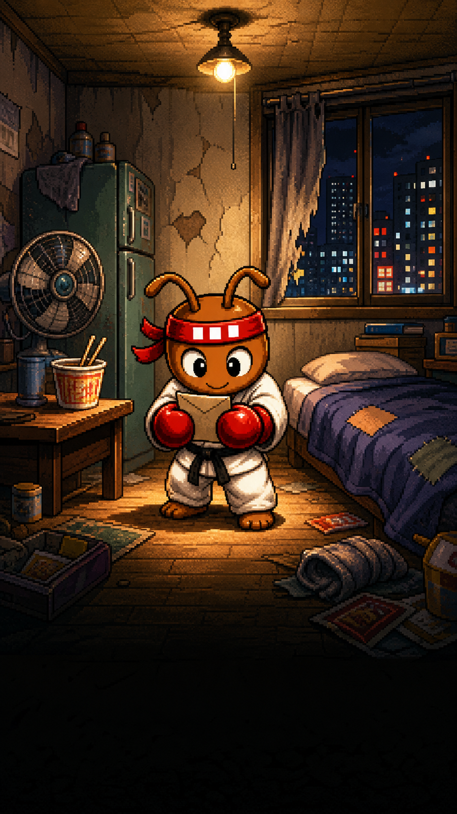
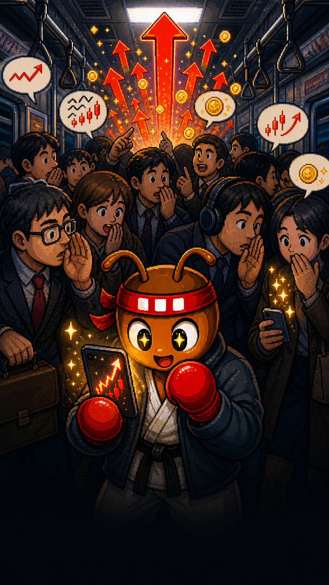
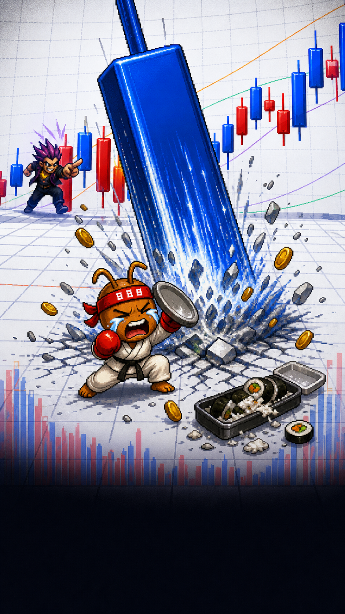
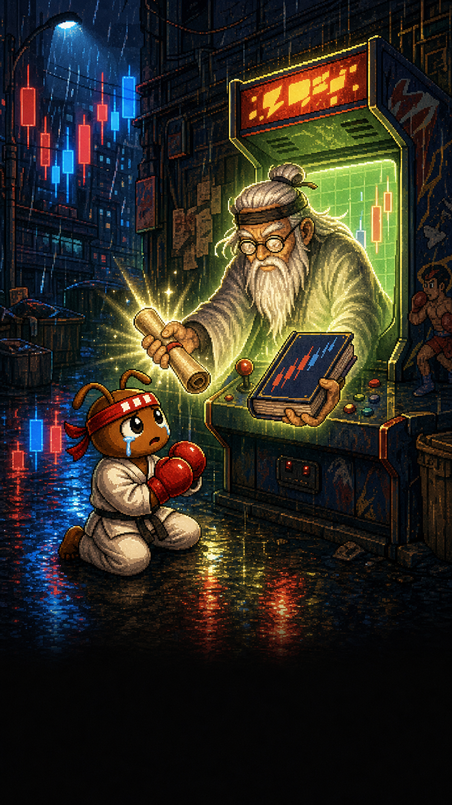
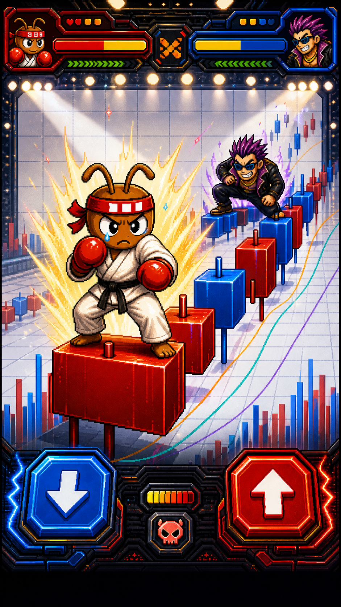

1장. 월급날의 장대음봉개미파이터. 평범한 직장인. 꿈은 작았다. 월급날에 치킨을 시켜도 눈치 안 보는 삶.
왼쪽은 모바일 앱에서 보일 페이드 인/아웃 흐름 미리보기입니다. 이미지는 장면만 담당하고, 자막과 SKIP 버튼은 실제 앱 UI로 얹는 기준입니다.





허름한 방, 월급 봉투, 컵라면. 웃기지만 너무 현실적인 시작.
지하철에서 들은 전설의 종목. 공부 대신 믿음을 누르는 순간.
파란 장대음봉이 인생을 덮치고, 추격자가 처음 등장하는 장면.
비 오는 오락실 앞에서 차트 도사를 만나 공부의 길로 들어감.
흰 차트 링 위에 올라선 개미파이터. 바로 퀴즈로 이어질 마지막 컷.